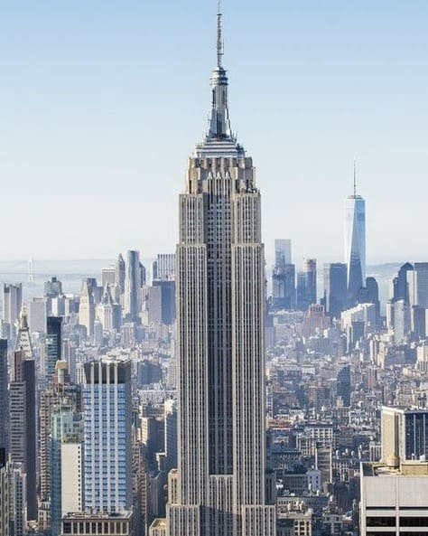
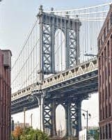
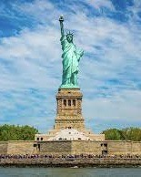
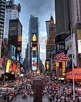
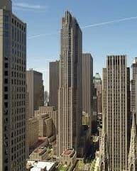
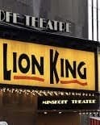
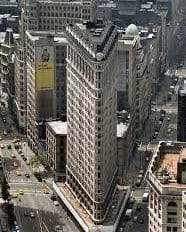

We all know that if you are visiting New York there are places that must be visited to be worthy of saying you have been to the Big Apple. Obviously there are many places ... but as always I have collected the eight most significant and most beautiful for me to see!
Is the largest and the most important public park in Manhattan.There are a zoo, an ice-skating rink, three small lakes, an open-air theatre, many athletic playing fields and children’s playgrounds, several fountains, and hundreds of small monuments and plaques scattered through the area.

Opened in 1931 on Manhattan’s Fifth Avenue, the Empire State Building is located in the heart of NYC, was the first building in the world to have more than 100 floors, and its steel frame was considered a modern marvel.

Completed in 1883, The Brooklyn Bridge was the first steel-wire suspension bridge, and at the time it was built, its 1,595 (486m) feet main span made it the the longest suspension bridge in the world.

The Statue is located on Liberty Island, was a gift of friendship from the people of France to the United States and is recognized as a universal symbol of freedom and democracy.

Times Square is a major commercial intersection, tourist destination, in Midtown Manhattan. Brightly lit at all hours by numerous digital billboards and advertisements as well as businesses offering 24/7 service, Times Square is sometimes referred to as "the Crossroads of the World" and "the heart of the world".

Is one of the largest private complexes of its kind in the world, consisting of 19 commercial buildings in New York City, overlooking Fifth Avenue within walking distance of Central Park.

Broadway are the theatrical performances presented in the 41 professional theatres, located in the Theater District and the Lincoln Center along Broadway, and represent the highest commercial level of live theater in the English-speaking world.

This 21-story Beaux Arts edifice once dominated midtown. Although it’s now dwarfed by other structures, when it debuted in 1902, the triangle-shaped monolith represented the threat and the thrill of modernity: Naysayers claimed it would never withstand the high winds plaguing 23rd Street.